| run_id | phenotype | random_seed | analysis_mode | tuning_split | n_records | n_participants | n_features | probable parkinsonian_records | control_records | probable parkinsonian_participants | control_participants | selected_k | selected_model |
|---|---|---|---|---|---|---|---|---|---|---|---|---|---|
| run20260222-205839 | probable_parkinsonian | 42 | confirmatory | val | 8,999 | 213 | 131 | 3,920 | 5,079 | 71 | 142 | 17 | Wide+Deep Neural Network |
Figure-first overview of the acoustic feature space and dataset composition.
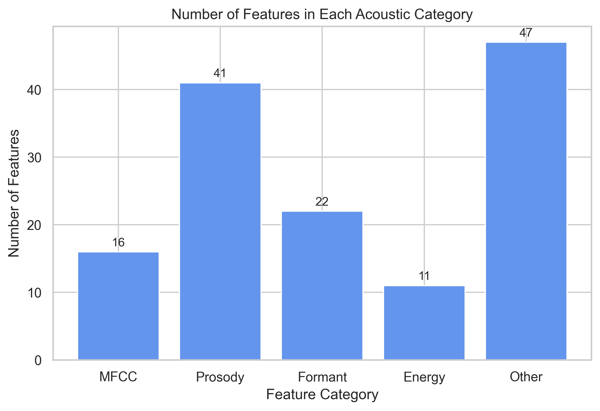
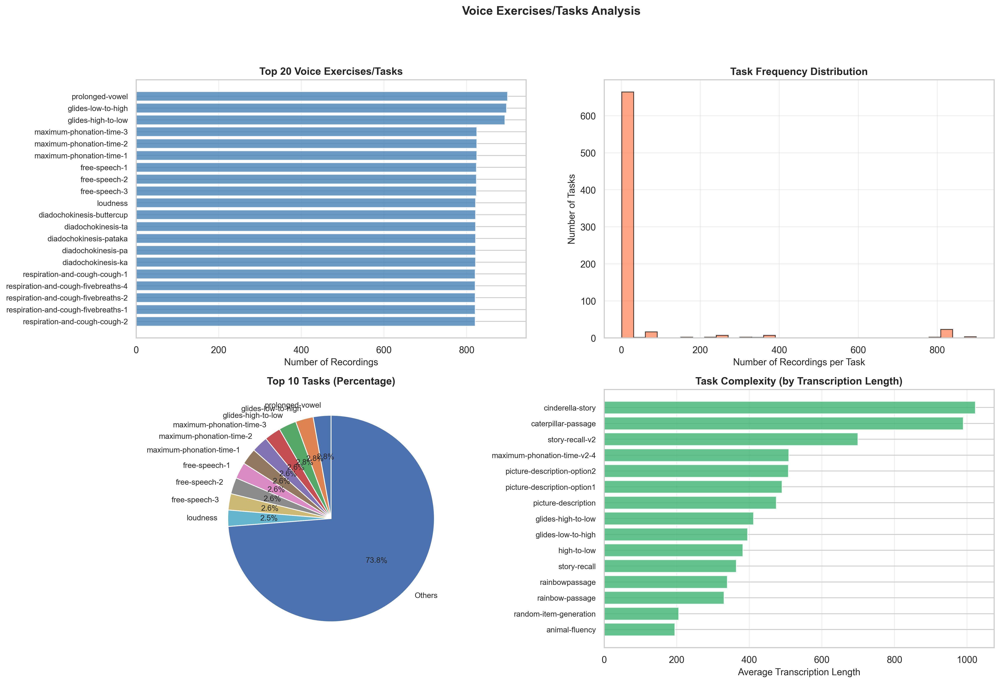
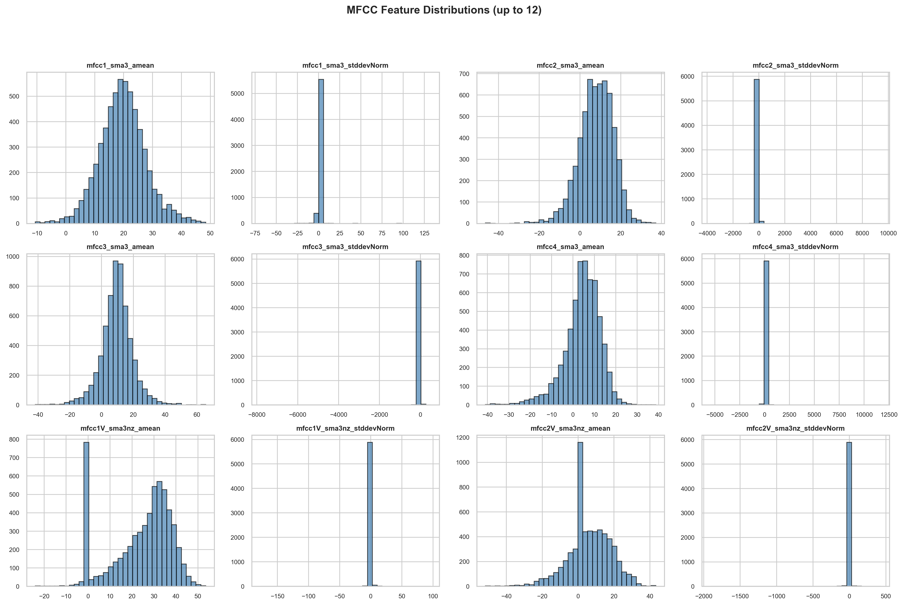
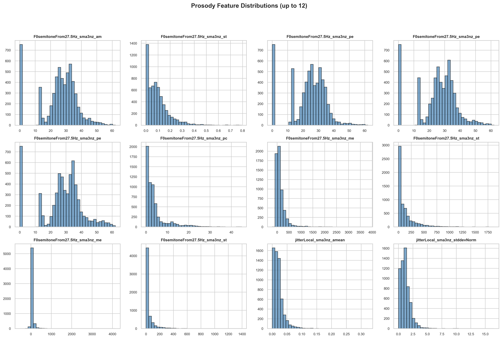
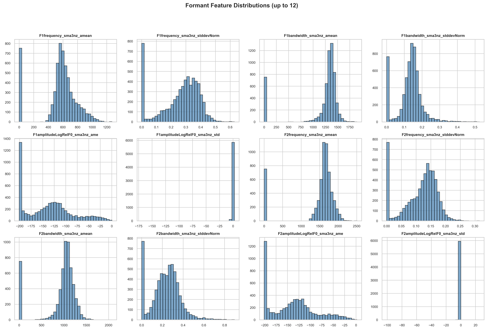
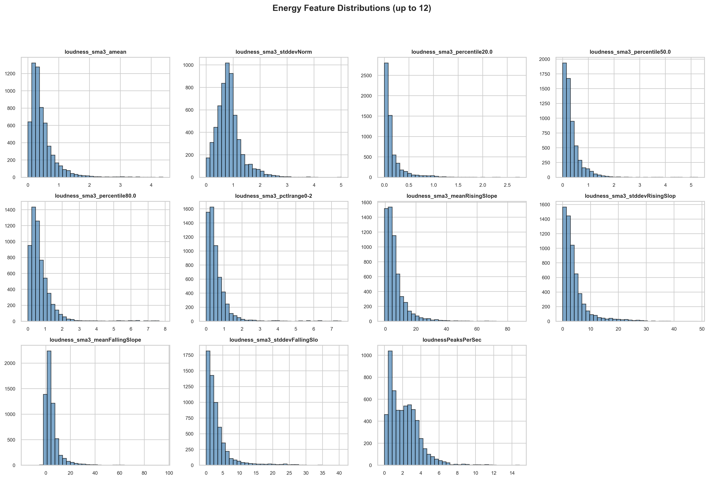
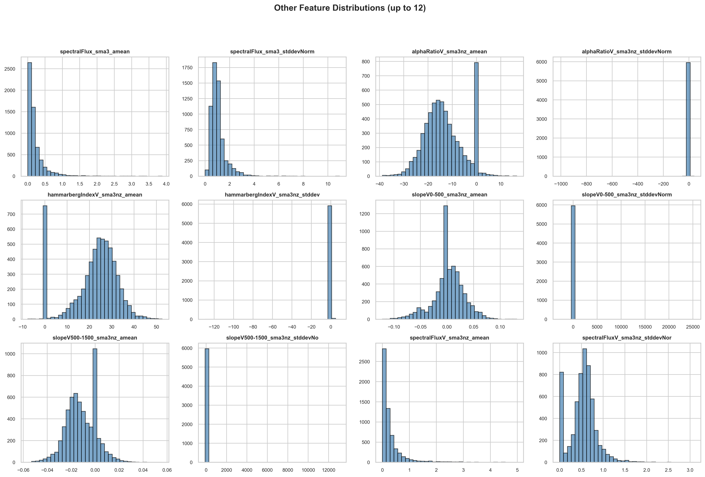
Cohort and static acoustic feature matrix after phenotype-specific labeling and filtering. Case vs control counts: probable parkinsonian=3,920 recordings / 71 participants; control=5,079 recordings / 142 participants.
| class_counts | class_counts_named | n_features | n_participants | n_records | negative_class_name | participant_class_counts | participant_class_counts_named | positive_class_name | recordings_per_participant |
|---|---|---|---|---|---|---|---|---|---|
| {'0': 5079, '1': 3920} | {'control': 5079, 'probable parkinsonian': 3920} | 131 | 213 | 8,999 | control | {'0': 142, '1': 71} | {'control': 142, 'probable parkinsonian': 71} | probable parkinsonian | {'max': 159.0, 'mean': 42.248826291079816, 'median': 36.0, 'min': 1.0} |
| level | train_participants | val_participants | test_participants | train_records | val_records | test_records |
|---|---|---|---|---|---|---|
| recording split | 136 | 34 | 43 | 5,764 | 1,495 | 1,740 |
| cluster split | 136 | 34 | 43 | 5,764 | 1,495 | 1,740 |
| level | split | participant_probable parkinsonian | participant_control | participant_positive_rate | recording_probable parkinsonian | recording_control | recording_positive_rate |
|---|---|---|---|---|---|---|---|
| recording split | train | 46 | 90 | 0.338 | 2,496 | 3,268 | 0.433 |
| recording split | val | 11 | 23 | 0.324 | 649 | 846 | 0.434 |
| recording split | test | 14 | 29 | 0.326 | 775 | 965 | 0.445 |
| cluster split | train | 46 | 90 | 0.338 | 2,496 | 3,268 | 0.433 |
| cluster split | val | 11 | 23 | 0.324 | 649 | 846 | 0.434 |
| cluster split | test | 14 | 29 | 0.326 | 775 | 965 | 0.445 |
Tuning split: val | Selected small-K center: 15 | coarse contenders: [15] | fine-tune Ks: [13, 14, 15, 16, 17]
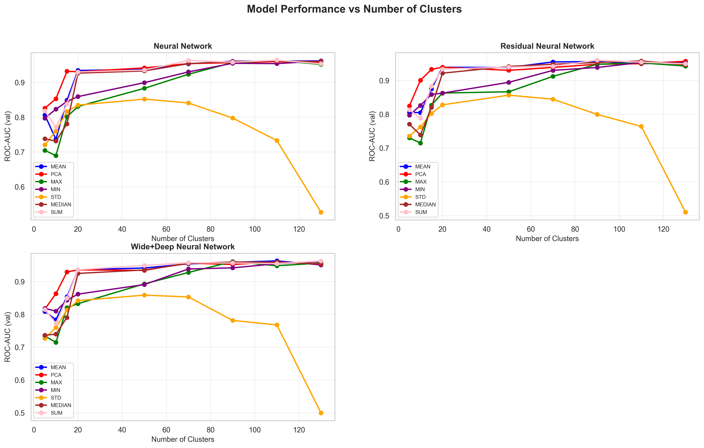
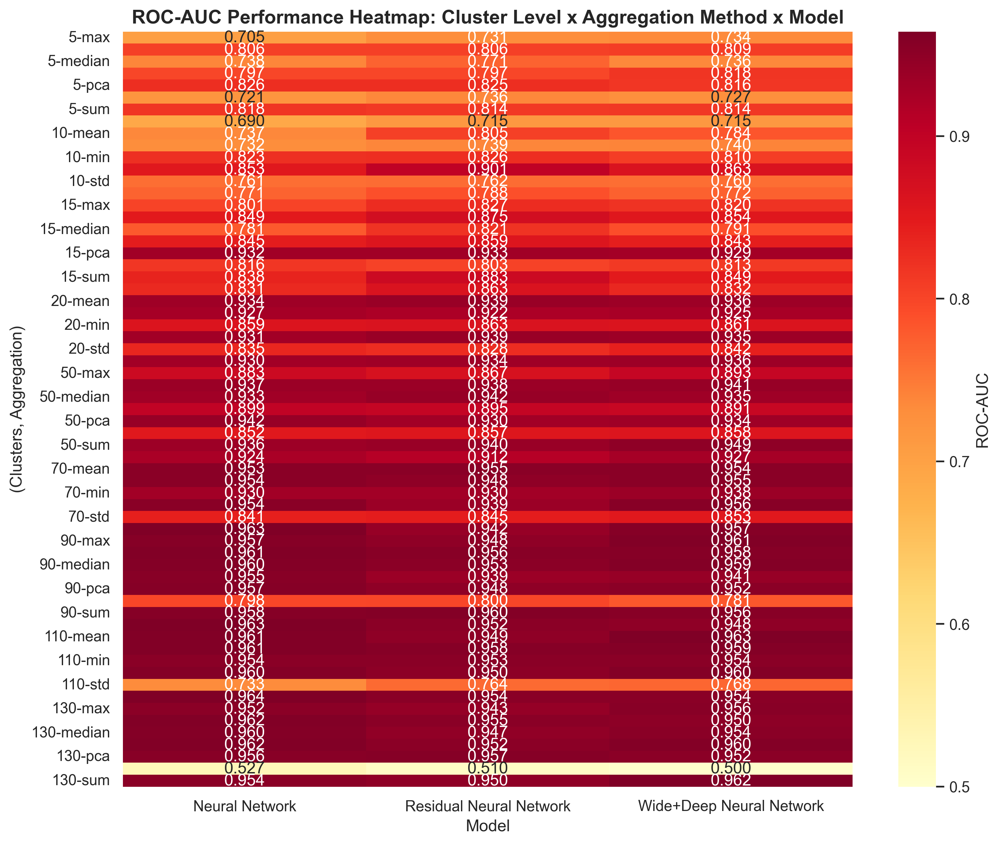
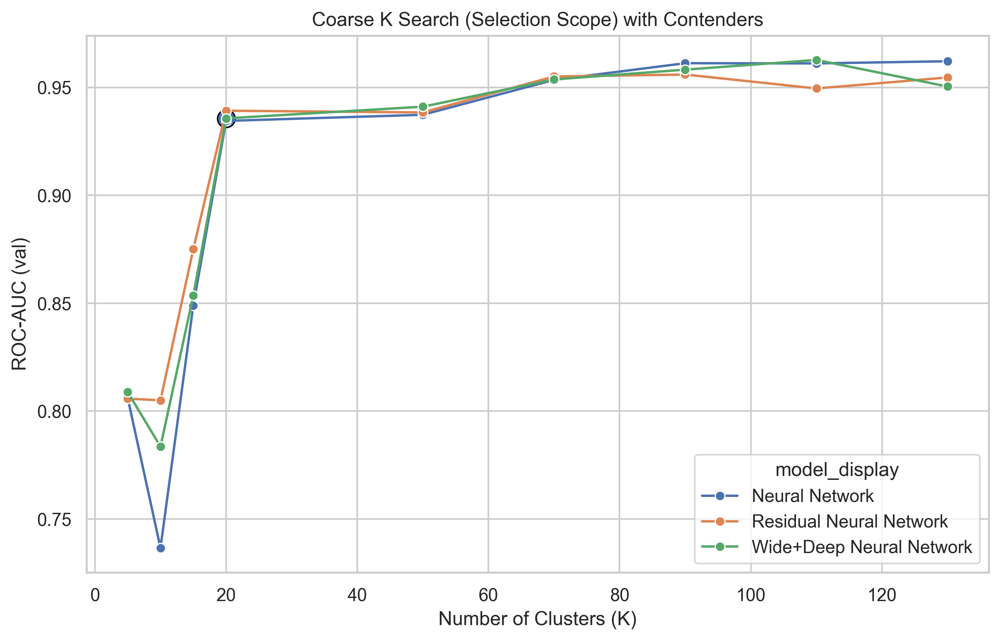
| n_clusters | evaluation_split | roc_auc | accuracy | f1 |
|---|---|---|---|---|
| 15 | val | 0.760 | 0.712 | 0.600 |
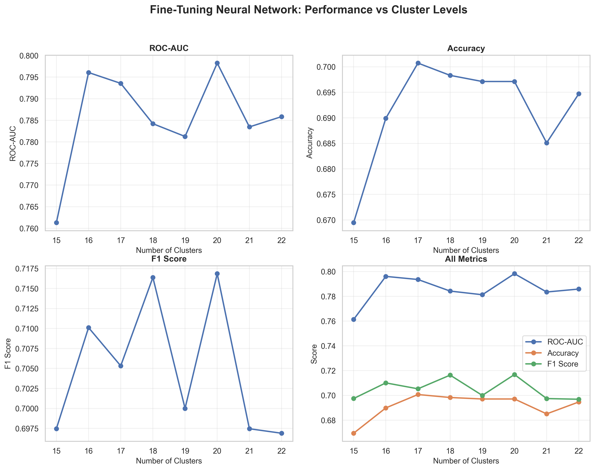
| n_clusters | aggregation | evaluation_split | model_display | estimator_class | roc_auc | accuracy | f1 | precision | recall | best_epoch |
|---|---|---|---|---|---|---|---|---|---|---|
| 17 | mean | val | Wide+Deep Neural Network | TorchWideDeepNetClassifier | 0.767 | 0.697 | 0.616 | 0.685 | 0.559 | 15 |
| 15 | mean | val | Wide+Deep Neural Network | TorchWideDeepNetClassifier | 0.763 | 0.702 | 0.621 | 0.694 | 0.562 | 23 |
| 16 | mean | val | Wide+Deep Neural Network | TorchWideDeepNetClassifier | 0.756 | 0.702 | 0.590 | 0.734 | 0.493 | 15 |
| 13 | mean | val | Wide+Deep Neural Network | TorchWideDeepNetClassifier | 0.740 | 0.686 | 0.606 | 0.664 | 0.558 | 9 |
| 14 | mean | val | Wide+Deep Neural Network | TorchWideDeepNetClassifier | 0.734 | 0.682 | 0.603 | 0.659 | 0.555 | 9 |
Models and focused hyperparameters followed by K-validation figures (silhouette, elbow, stability).
| model | model_display | estimator_class | key_hyperparameters | all_hyperparameters_json |
|---|---|---|---|---|
| logistic_regression | Logistic Regression | LogisticRegression | C=1.0, penalty=l2, solver=lbfgs, max_iter=1000, class_weight=balanced | {"C": 1.0, "class_weight": "balanced", "max_iter": 1000, "penalty": "l2", "solver": "lbfgs"} |
| elastic_net_logistic | Elastic-Net Logistic | SGDClassifier | loss=log_loss, penalty=elasticnet, alpha=0.0003, l1_ratio=0.2, max_iter=2500, class_weight=balanced | {"alpha": 0.0003, "class_weight": "balanced", "l1_ratio": 0.2, "loss": "log_loss", "max_iter": 2500, "penalty": "elasticnet", "tol": 0.0001} |
| random_forest | Random Forest | RandomForestClassifier | n_estimators=150, max_depth=10, min_samples_leaf=10, min_samples_split=20, max_features=sqrt, class_weight=balanced | {"class_weight": "balanced", "max_depth": 10, "max_features": "sqrt", "min_samples_leaf": 10, "min_samples_split": 20, "n_estimators": 150, "n_jobs": -1} |
| extra_trees | Extra Trees | ExtraTreesClassifier | n_estimators=500, max_depth=12, min_samples_leaf=5, min_samples_split=10, max_features=sqrt, class_weight=balanced | {"class_weight": "balanced", "max_depth": 12, "max_features": "sqrt", "min_samples_leaf": 5, "min_samples_split": 10, "n_estimators": 500, "n_jobs": -1} |
| hist_gradient_boosting | Hist Gradient Boosting | HistGradientBoostingClassifier | learning_rate=0.05, max_iter=300, max_leaf_nodes=31, min_samples_leaf=20, l2_regularization=0.01, validation_fraction=0.2 | {"early_stopping": true, "l2_regularization": 0.01, "learning_rate": 0.05, "max_iter": 300, "max_leaf_nodes": 31, "min_samples_leaf": 20, "n_iter_no_change": 15, "validation_fraction": 0.2} |
| svc_rbf | RBF SVM | SVC | C=2.0, kernel=rbf, gamma=scale, class_weight=balanced, probability=True | {"C": 2.0, "class_weight": "balanced", "gamma": "scale", "kernel": "rbf", "probability": true} |
| mlp | Neural Network | TorchRegularizedHybridNetClassifier | hidden_dims=[256, 128, 64], lr=0.0006, weight_decay=0.008, dropout_rate=0.3, epochs=40, patience=6, batch_size=128 | {"backend": "pytorch", "batch_size": 128, "device": "auto", "dropout_rate": 0.3, "epochs": 40, "gradient_clip": 0.5, "hidden_dims": [256, 128, 64], "label_smoothing": 0.1, "lr": 0.0006, "min_delta": 0.0001, "noise_std": 0.01, "patience": 6, "pct_start": 0.2, "validation_fraction": 0.2, "weight_decay": 0.008} |
| residual_mlp | Residual Neural Network | TorchResidualHybridNetClassifier | hidden_dims=[256, 128, 64], lr=0.0005, weight_decay=0.01, dropout_rate=0.25, epochs=50, patience=8, batch_size=128 | {"batch_size": 128, "device": "auto", "dropout_rate": 0.25, "epochs": 50, "gradient_clip": 1.0, "hidden_dims": [256, 128, 64], "label_smoothing": 0.05, "lr": 0.0005, "min_delta": 0.0001, "noise_std": 0.01, "patience": 8, "pct_start": 0.2, "use_batch_norm": true, "validation_fraction": 0.2, "weight_decay": 0.01} |
| wide_deep_mlp | Wide+Deep Neural Network | TorchWideDeepNetClassifier | hidden_dims=[192, 96, 48], lr=0.0007, weight_decay=0.005, dropout_rate=0.2, epochs=45, patience=7, batch_size=128 | {"batch_size": 128, "device": "auto", "dropout_rate": 0.2, "epochs": 45, "gradient_clip": 0.8, "hidden_dims": [192, 96, 48], "label_smoothing": 0.05, "lr": 0.0007, "min_delta": 0.0001, "noise_std": 0.008, "patience": 7, "pct_start": 0.2, "use_batch_norm": true, "validation_fraction": 0.2, "weight_decay": 0.005} |
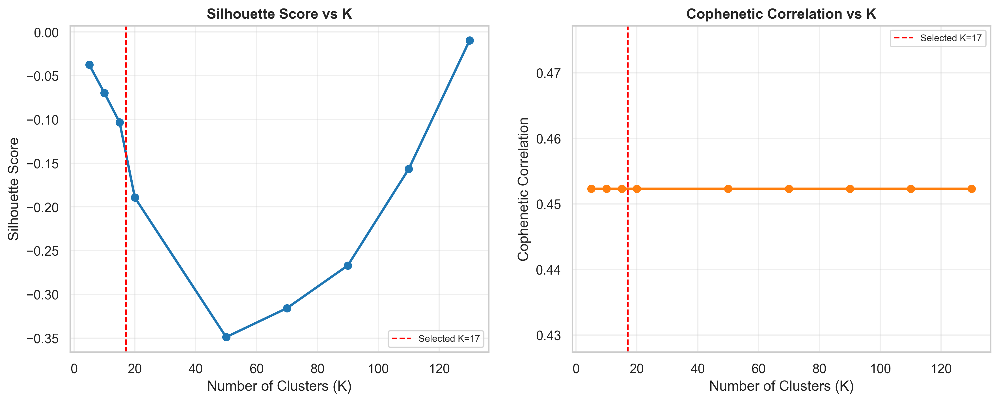
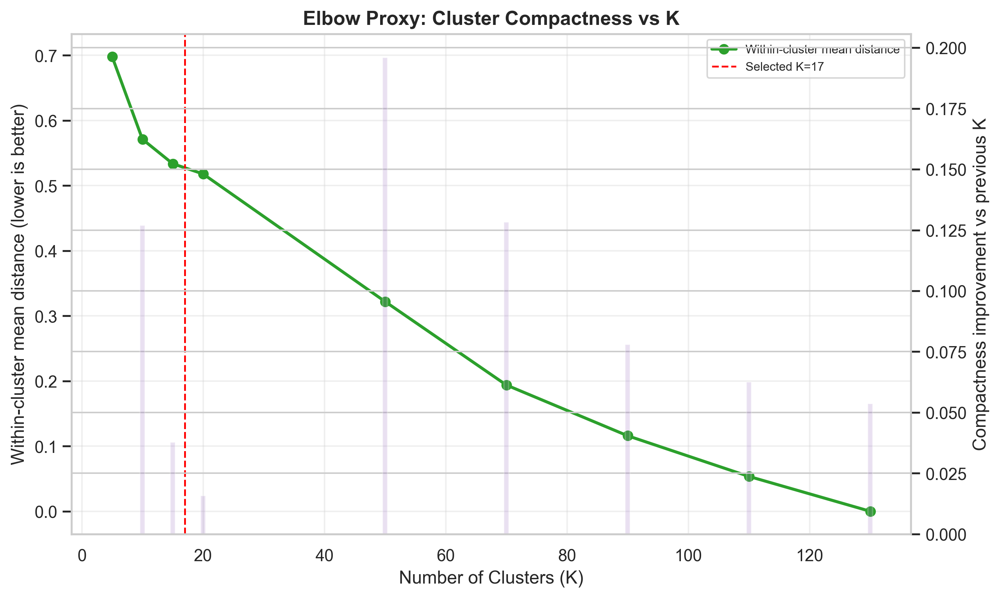
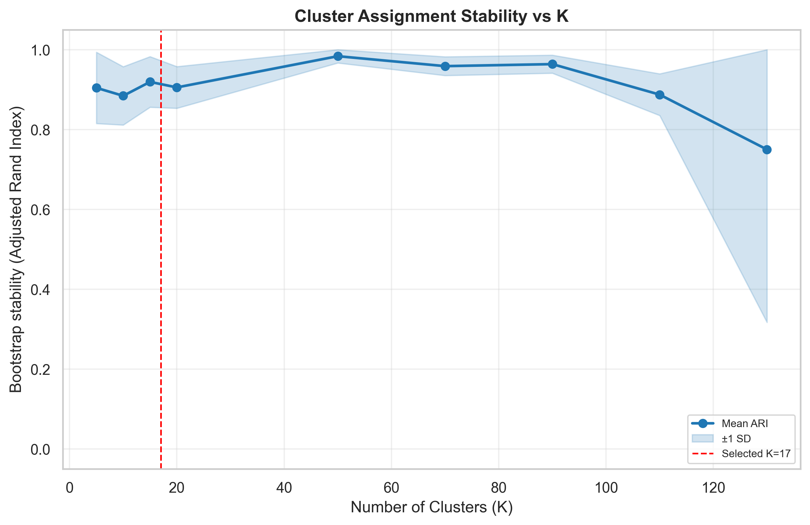
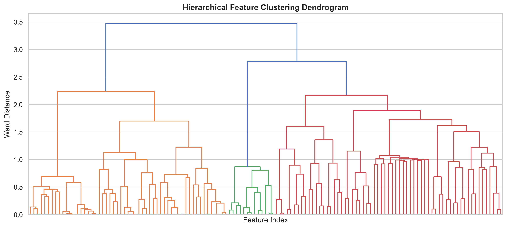
| k | n_clusters | cophenetic_correlation | silhouette_score |
|---|---|---|---|
| 5 | 5 | 0.452 | -0.037 |
| 10 | 10 | 0.452 | -0.070 |
| 15 | 15 | 0.452 | -0.103 |
| 20 | 20 | 0.452 | -0.189 |
| 50 | 50 | 0.452 | -0.349 |
| 70 | 70 | 0.452 | -0.316 |
| 90 | 90 | 0.452 | -0.267 |
| 110 | 110 | 0.452 | -0.157 |
| 130 | 130 | 0.452 | -0.010 |
| k | within_cluster_mean_distance | improvement_vs_prev_k |
|---|---|---|
| 5 | 0.698 | |
| 10 | 0.571 | 0.127 |
| 15 | 0.534 | 0.038 |
| 20 | 0.518 | 0.016 |
| 50 | 0.322 | 0.196 |
| 70 | 0.194 | 0.128 |
| 90 | 0.116 | 0.078 |
| 110 | 0.054 | 0.062 |
| 130 | 0.000 | 0.054 |
| k | n_bootstrap | n_pairs | ari_mean | ari_std | ari_min | ari_max |
|---|---|---|---|---|---|---|
| 5 | 8 | 28 | 0.904 | 0.089 | 0.700 | 1.000 |
| 10 | 8 | 28 | 0.884 | 0.073 | 0.758 | 1.000 |
| 15 | 8 | 28 | 0.919 | 0.063 | 0.799 | 1.000 |
| 20 | 8 | 28 | 0.905 | 0.052 | 0.803 | 0.987 |
| 50 | 8 | 28 | 0.984 | 0.017 | 0.947 | 1.000 |
| 70 | 8 | 28 | 0.959 | 0.024 | 0.914 | 1.000 |
| 90 | 8 | 28 | 0.964 | 0.023 | 0.919 | 1.000 |
| 110 | 8 | 28 | 0.887 | 0.052 | 0.827 | 1.000 |
| 130 | 8 | 28 | 0.750 | 0.433 | -0.000 | 1.000 |
Brief interpretation of what each selected-feature cluster groups together.
| cluster_id | cluster_importance | n_features | dominant_category | category_breakdown | example_features |
|---|---|---|---|---|---|
| 12 | 0.097 | 7 | Other | Energy:1, Other:6 | VoicedSegmentsPerSec, articulation_rate, loudnessPeaksPerSec, pesq, si_sdr, speaking_rate |
| 11 | 0.088 | 5 | Other | Other:5 | alphaRatioUV_sma3nz_amean, hammarbergIndexUV_sma3nz_amean, slopeUV0-500_sma3nz_amean, spectral_kurtosis, spectral_skewness |
| 5 | 0.081 | 12 | Prosody | Prosody:10, Other:2 | F1amplitudeLogRelF0_sma3nz_amean, F1amplitudeLogRelF0_sma3nz_stddevNorm, F2amplitudeLogRelF0_sma3nz_amean, F2amplitudeLogRelF0_sma3nz_stddevNorm, F3amplitudeLogRelF0_sma3nz_amean, F3amplitudeLogRelF0_sma3nz_stddevNorm |
| 3 | 0.072 | 10 | Prosody | Prosody:5, Formant:2, Other:3 | ddp_jitter, local_jitter, mean_b1_loc, mean_f0_hertz, mean_f1_loc, ppq5_jitter |
| 10 | 0.058 | 3 | MFCC | MFCC:2, Other:1 | mfcc4V_sma3nz_amean, mfcc4_sma3_amean, slopeV0-500_sma3nz_amean |
| 14 | 0.054 | 6 | Other | Energy:1, Other:5 | loudness_sma3_stddevNorm, mean_pause_duration, pause_rate, phonation_ratio, spectralFlux_sma3_stddevNorm, std_intensity_db |
| 1 | 0.048 | 19 | Formant | Prosody:5, Formant:12, Other:2 | F0semitoneFrom27.5Hz_sma3nz_amean, F0semitoneFrom27.5Hz_sma3nz_percentile20.0, F0semitoneFrom27.5Hz_sma3nz_percentile50.0, F0semitoneFrom27.5Hz_sma3nz_percentile80.0, F1bandwidth_sma3nz_amean, F1bandwidth_sma3nz_stddevNorm |
| 7 | 0.044 | 8 | Other | MFCC:2, Prosody:1, Other:5 | alphaRatioV_sma3nz_amean, hammarbergIndexV_sma3nz_amean, logRelF0-H1-A3_sma3nz_amean, mfcc2V_sma3nz_amean, mfcc2_sma3_amean, spectral_gravity |
| 6 | 0.044 | 13 | Energy | Energy:7, Other:6 | equivalentSoundLevel_dBp, loudness_sma3_amean, loudness_sma3_meanFallingSlope, loudness_sma3_meanRisingSlope, loudness_sma3_pctlrange0-2, loudness_sma3_percentile80.0 |
| 16 | 0.043 | 3 | Prosody | Prosody:2, Other:1 | StddevUnvoicedSegmentLength, jitterLocal_sma3nz_amean, shimmerLocaldB_sma3nz_amean |
| 4 | 0.038 | 7 | Prosody | Prosody:6, Other:1 | apq11_shimmer, apq3_shimmer, apq5_shimmer, cepstral_peak_prominence_mean, dda_shimmer, localDB_shimmer |
| 13 | 0.036 | 2 | Energy | Energy:2 | loudness_sma3_percentile20.0, loudness_sma3_percentile50.0 |
| 9 | 0.035 | 5 | MFCC | MFCC:2, Formant:1, Other:2 | mean_b2_loc, mfcc3V_sma3nz_amean, mfcc3_sma3_amean, std_b2_loc, std_f2_loc |
| 2 | 0.028 | 5 | MFCC | MFCC:2, Prosody:1, Formant:1, Other:1 | mean_f2_loc, mfcc1V_sma3nz_amean, mfcc1_sma3_amean, spectral_tilt, std_f0_hertz |
| 17 | 0.025 | 7 | Prosody | Prosody:6, Other:1 | F0semitoneFrom27.5Hz_sma3nz_meanFallingSlope, F0semitoneFrom27.5Hz_sma3nz_meanRisingSlope, F0semitoneFrom27.5Hz_sma3nz_pctlrange0-2, F0semitoneFrom27.5Hz_sma3nz_stddevFallingSlope, F0semitoneFrom27.5Hz_sma3nz_stddevNorm, F0semitoneFrom27.5Hz_sma3nz_stddevRisingSlope |
| 8 | 0.023 | 3 | Other | Prosody:1, Other:2 | cepstral_peak_prominence_std, duration, std_hnr_db |
| 15 | 0.015 | 16 | MFCC | MFCC:8, Prosody:4, Other:4 | HNRdBACF_sma3nz_stddevNorm, alphaRatioV_sma3nz_stddevNorm, logRelF0-H1-A3_sma3nz_stddevNorm, logRelF0-H1-H2_sma3nz_amean, logRelF0-H1-H2_sma3nz_stddevNorm, mfcc1V_sma3nz_stddevNorm |
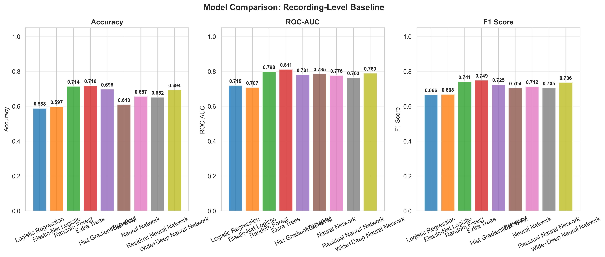
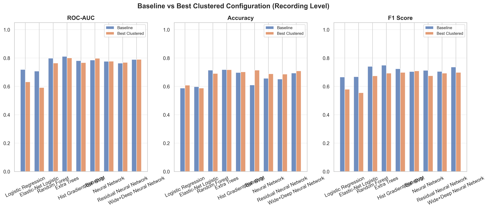
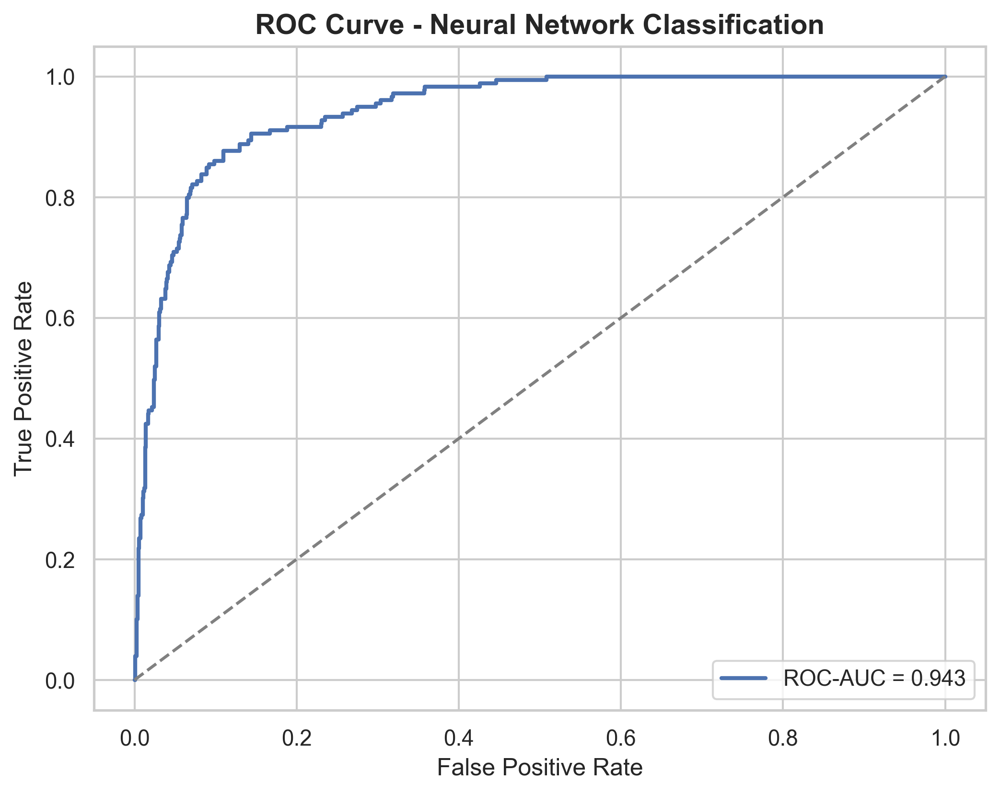
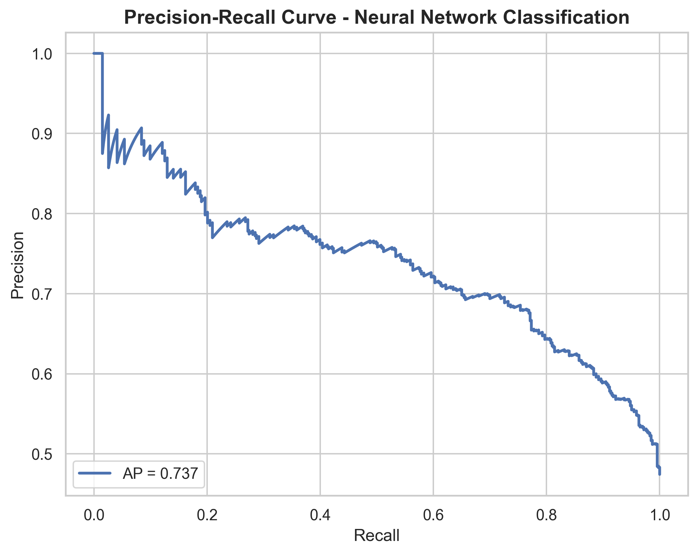
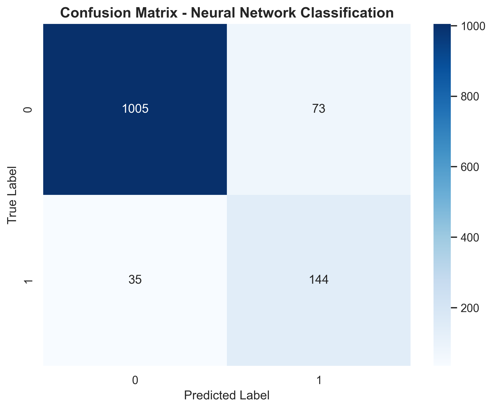
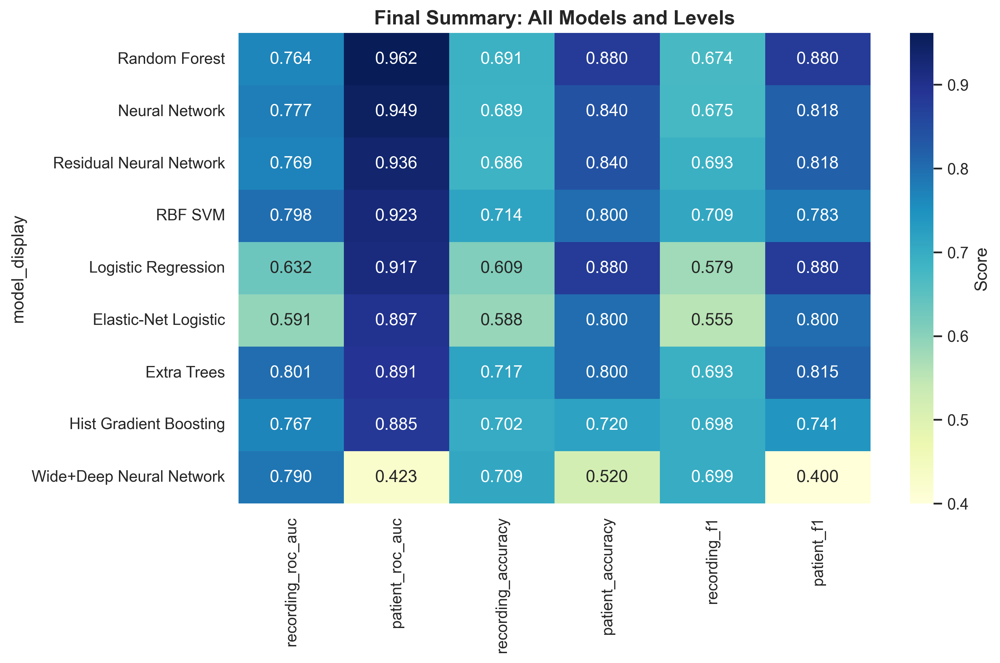
| model_display | estimator_class | threshold | accuracy | roc_auc | f1 | precision | recall |
|---|---|---|---|---|---|---|---|
| RBF SVM | SVC | 0.300 | 0.648 | 0.733 | 0.647 | 0.585 | 0.725 |
| Wide+Deep Neural Network | TorchWideDeepNetClassifier | 0.400 | 0.672 | 0.732 | 0.646 | 0.621 | 0.674 |
| Hist Gradient Boosting | HistGradientBoostingClassifier | 0.200 | 0.645 | 0.731 | 0.657 | 0.577 | 0.763 |
| Neural Network | TorchRegularizedHybridNetClassifier | 0.300 | 0.634 | 0.722 | 0.642 | 0.569 | 0.738 |
| Residual Neural Network | TorchResidualHybridNetClassifier | 0.350 | 0.653 | 0.704 | 0.621 | 0.605 | 0.637 |
| Logistic Regression | LogisticRegression | 0.450 | 0.649 | 0.689 | 0.624 | 0.596 | 0.654 |
| Elastic-Net Logistic | SGDClassifier | 0.450 | 0.640 | 0.677 | 0.616 | 0.587 | 0.648 |
| Random Forest | RandomForestClassifier | 0.350 | 0.575 | 0.670 | 0.631 | 0.515 | 0.817 |
| Extra Trees | ExtraTreesClassifier | 0.400 | 0.564 | 0.636 | 0.605 | 0.507 | 0.750 |
| model_display | n_clusters | aggregation | roc_auc_baseline | roc_auc_cluster | delta_roc_auc | accuracy_baseline | accuracy_cluster | delta_accuracy | f1_baseline | f1_cluster | delta_f1 |
|---|---|---|---|---|---|---|---|---|---|---|---|
| Residual Neural Network | 17 | mean | 0.704 | 0.685 | -0.019 | 0.653 | 0.633 | -0.020 | 0.621 | 0.571 | -0.049 |
| Hist Gradient Boosting | 17 | mean | 0.731 | 0.683 | -0.049 | 0.645 | 0.631 | -0.014 | 0.657 | 0.559 | -0.098 |
| Wide+Deep Neural Network | 17 | mean | 0.732 | 0.676 | -0.056 | 0.672 | 0.628 | -0.044 | 0.646 | 0.539 | -0.108 |
| Random Forest | 17 | mean | 0.670 | 0.671 | 0.001 | 0.575 | 0.617 | 0.041 | 0.631 | 0.558 | -0.073 |
| RBF SVM | 17 | mean | 0.733 | 0.664 | -0.069 | 0.648 | 0.616 | -0.032 | 0.647 | 0.541 | -0.107 |
| Neural Network | 17 | mean | 0.722 | 0.664 | -0.058 | 0.634 | 0.613 | -0.021 | 0.642 | 0.530 | -0.112 |
| Extra Trees | 17 | mean | 0.636 | 0.632 | -0.004 | 0.564 | 0.583 | 0.019 | 0.605 | 0.512 | -0.093 |
| Logistic Regression | 17 | mean | 0.689 | 0.514 | -0.175 | 0.649 | 0.521 | -0.128 | 0.624 | 0.458 | -0.166 |
| Elastic-Net Logistic | 17 | mean | 0.677 | 0.498 | -0.179 | 0.640 | 0.513 | -0.127 | 0.616 | 0.422 | -0.194 |
Main figures in this section reflect held-out test performance (aligned with final tables). Selection-split (val) tuning results are shown in the tables below.
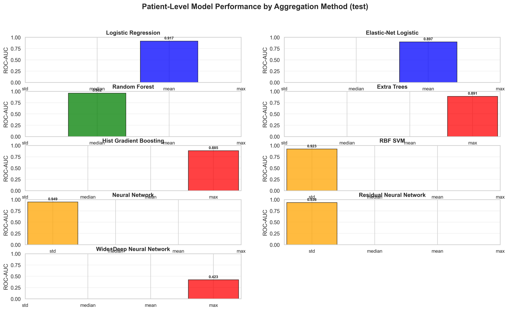
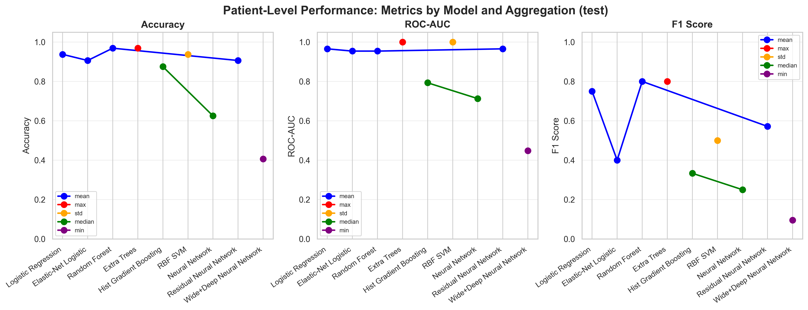
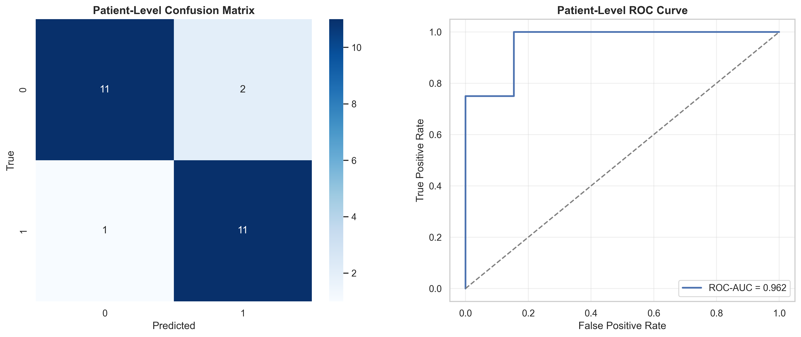
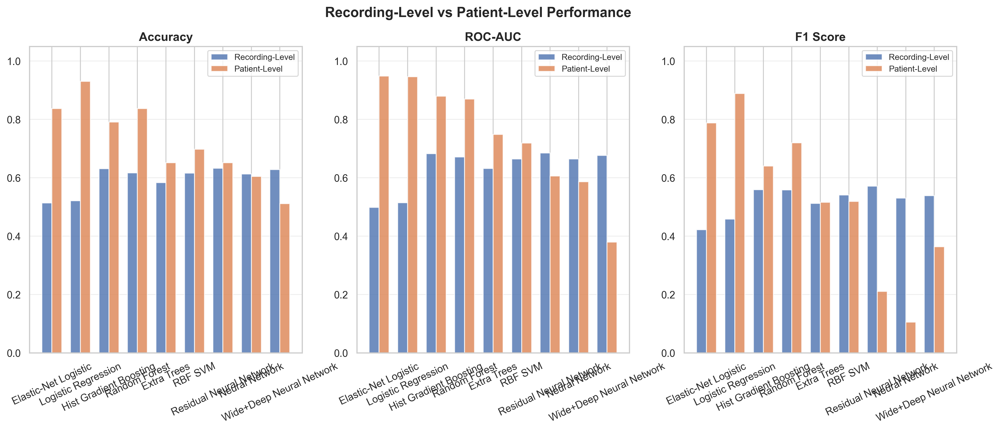
| model_display | estimator_class | patient_aggregation | evaluation_split | accuracy | roc_auc | f1 | precision | recall |
|---|---|---|---|---|---|---|---|---|
| Wide+Deep Neural Network | TorchWideDeepNetClassifier | mean | val | 0.824 | 0.917 | 0.750 | 0.692 | 0.818 |
| Residual Neural Network | TorchResidualHybridNetClassifier | median | val | 0.794 | 0.913 | 0.632 | 0.750 | 0.545 |
| Extra Trees | ExtraTreesClassifier | median | val | 0.765 | 0.897 | 0.692 | 0.600 | 0.818 |
| Logistic Regression | LogisticRegression | max | val | 0.853 | 0.889 | 0.737 | 0.875 | 0.636 |
| Hist Gradient Boosting | HistGradientBoostingClassifier | max | val | 0.794 | 0.889 | 0.667 | 0.700 | 0.636 |
| RBF SVM | SVC | median | val | 0.765 | 0.874 | 0.600 | 0.667 | 0.545 |
| Random Forest | RandomForestClassifier | max | val | 0.765 | 0.870 | 0.636 | 0.636 | 0.636 |
| Elastic-Net Logistic | SGDClassifier | std | val | 0.765 | 0.858 | 0.636 | 0.636 | 0.636 |
| Neural Network | TorchRegularizedHybridNetClassifier | median | val | 0.706 | 0.858 | 0.583 | 0.538 | 0.636 |
| model_display | estimator_class | patient_aggregation | evaluation_split | accuracy | roc_auc | f1 | precision | recall |
|---|---|---|---|---|---|---|---|---|
| Wide+Deep Neural Network | TorchWideDeepNetClassifier | mean | val | 0.824 | 0.917 | 0.750 | 0.692 | 0.818 |
| Residual Neural Network | TorchResidualHybridNetClassifier | median | val | 0.794 | 0.913 | 0.632 | 0.750 | 0.545 |
| Wide+Deep Neural Network | TorchWideDeepNetClassifier | median | val | 0.824 | 0.897 | 0.727 | 0.727 | 0.727 |
| Extra Trees | ExtraTreesClassifier | median | val | 0.765 | 0.897 | 0.692 | 0.600 | 0.818 |
| Logistic Regression | LogisticRegression | max | val | 0.853 | 0.889 | 0.737 | 0.875 | 0.636 |
| Hist Gradient Boosting | HistGradientBoostingClassifier | max | val | 0.794 | 0.889 | 0.667 | 0.700 | 0.636 |
| Residual Neural Network | TorchResidualHybridNetClassifier | max | val | 0.794 | 0.877 | 0.533 | 1.000 | 0.364 |
| RBF SVM | SVC | median | val | 0.765 | 0.874 | 0.600 | 0.667 | 0.545 |
| Random Forest | RandomForestClassifier | max | val | 0.765 | 0.870 | 0.636 | 0.636 | 0.636 |
| Hist Gradient Boosting | HistGradientBoostingClassifier | mean | val | 0.765 | 0.868 | 0.636 | 0.636 | 0.636 |
| Hist Gradient Boosting | HistGradientBoostingClassifier | median | val | 0.765 | 0.866 | 0.556 | 0.714 | 0.455 |
| Elastic-Net Logistic | SGDClassifier | std | val | 0.765 | 0.858 | 0.636 | 0.636 | 0.636 |
| Neural Network | TorchRegularizedHybridNetClassifier | median | val | 0.706 | 0.858 | 0.583 | 0.538 | 0.636 |
| Neural Network | TorchRegularizedHybridNetClassifier | std | val | 0.824 | 0.854 | 0.727 | 0.727 | 0.727 |
| Residual Neural Network | TorchResidualHybridNetClassifier | mean | val | 0.794 | 0.854 | 0.588 | 0.833 | 0.455 |
| model_display | estimator_class | patient_aggregation | evaluation_split | accuracy | roc_auc | f1 | precision | recall |
|---|---|---|---|---|---|---|---|---|
| Elastic-Net Logistic | SGDClassifier | std | test | 0.837 | 0.948 | 0.788 | 0.684 | 0.929 |
| Logistic Regression | LogisticRegression | max | test | 0.930 | 0.946 | 0.889 | 0.923 | 0.857 |
| Hist Gradient Boosting | HistGradientBoostingClassifier | max | test | 0.791 | 0.879 | 0.640 | 0.727 | 0.571 |
| Random Forest | RandomForestClassifier | max | test | 0.837 | 0.869 | 0.720 | 0.818 | 0.643 |
| Extra Trees | ExtraTreesClassifier | median | test | 0.651 | 0.749 | 0.516 | 0.471 | 0.571 |
| RBF SVM | SVC | median | test | 0.698 | 0.719 | 0.519 | 0.538 | 0.500 |
| Residual Neural Network | TorchResidualHybridNetClassifier | median | test | 0.651 | 0.606 | 0.211 | 0.400 | 0.143 |
| Neural Network | TorchRegularizedHybridNetClassifier | median | test | 0.605 | 0.586 | 0.105 | 0.200 | 0.071 |
| Wide+Deep Neural Network | TorchWideDeepNetClassifier | mean | test | 0.512 | 0.379 | 0.364 | 0.316 | 0.429 |
| model_display | estimator_class | patient_aggregation | evaluation_split | accuracy | roc_auc | f1 | precision | recall |
|---|---|---|---|---|---|---|---|---|
| Elastic-Net Logistic | SGDClassifier | std | test | 0.837 | 0.948 | 0.788 | 0.684 | 0.929 |
| Logistic Regression | LogisticRegression | max | test | 0.930 | 0.946 | 0.889 | 0.923 | 0.857 |
| Hist Gradient Boosting | HistGradientBoostingClassifier | max | test | 0.791 | 0.879 | 0.640 | 0.727 | 0.571 |
| Random Forest | RandomForestClassifier | max | test | 0.837 | 0.869 | 0.720 | 0.818 | 0.643 |
| Extra Trees | ExtraTreesClassifier | median | test | 0.651 | 0.749 | 0.516 | 0.471 | 0.571 |
| RBF SVM | SVC | median | test | 0.698 | 0.719 | 0.519 | 0.538 | 0.500 |
| Residual Neural Network | TorchResidualHybridNetClassifier | median | test | 0.651 | 0.606 | 0.211 | 0.400 | 0.143 |
| Neural Network | TorchRegularizedHybridNetClassifier | median | test | 0.605 | 0.586 | 0.105 | 0.200 | 0.071 |
| Wide+Deep Neural Network | TorchWideDeepNetClassifier | mean | test | 0.512 | 0.379 | 0.364 | 0.316 | 0.429 |
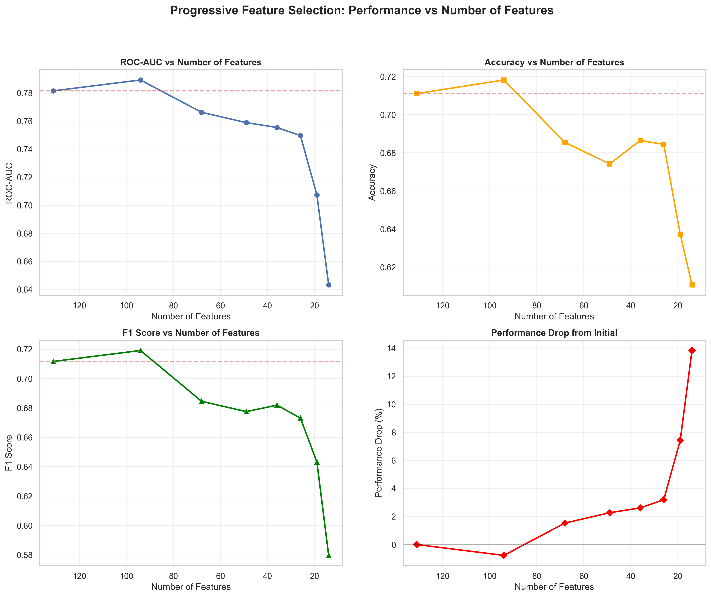
Best progressive ROC-AUC at 131 features (ROC-AUC=0.744, Accuracy=0.685, F1=0.620).
| step | n_features | feature_names | test_accuracy | test_roc_auc | test_f1 | test_precision | test_recall |
|---|---|---|---|---|---|---|---|
| 1 | 131 | F0semitoneFrom27.5Hz_sma3nz_amean|F0semitoneFrom27.5Hz_sma3nz_stddevNorm|F0semitoneFrom27.5Hz_sma3nz_percentile20.0|F0semitoneFrom27.5Hz_sma3nz_percentile50.0|F0semitoneFrom27.5Hz_sma3nz_percentile80.0|F0semitoneFrom27.5Hz_sma3nz_pctlrange0-2|F0semitoneFrom27.5Hz_sma3nz_meanRisingSlope|F0semitoneFrom27.5Hz_sma3nz_stddevRisingSlope|F0semitoneFrom27.5Hz_sma3nz_meanFallingSlope|F0semitoneFrom27.5Hz_sma3nz_stddevFallingSlope|loudness_sma3_amean|loudness_sma3_stddevNorm|loudness_sma3_percentile20.0|loudness_sma3_percentile50.0|loudness_sma3_percentile80.0|loudness_sma3_pctlrange0-2|loudness_sma3_meanRisingSlope|loudness_sma3_stddevRisingSlope|loudness_sma3_meanFallingSlope|loudness_sma3_stddevFallingSlope|spectralFlux_sma3_amean|spectralFlux_sma3_stddevNorm|mfcc1_sma3_amean|mfcc1_sma3_stddevNorm|mfcc2_sma3_amean|mfcc2_sma3_stddevNorm|mfcc3_sma3_amean|mfcc3_sma3_stddevNorm|mfcc4_sma3_amean|mfcc4_sma3_stddevNorm|jitterLocal_sma3nz_amean|jitterLocal_sma3nz_stddevNorm|shimmerLocaldB_sma3nz_amean|shimmerLocaldB_sma3nz_stddevNorm|HNRdBACF_sma3nz_amean|HNRdBACF_sma3nz_stddevNorm|logRelF0-H1-H2_sma3nz_amean|logRelF0-H1-H2_sma3nz_stddevNorm|logRelF0-H1-A3_sma3nz_amean|logRelF0-H1-A3_sma3nz_stddevNorm|F1frequency_sma3nz_amean|F1frequency_sma3nz_stddevNorm|F1bandwidth_sma3nz_amean|F1bandwidth_sma3nz_stddevNorm|F1amplitudeLogRelF0_sma3nz_amean|F1amplitudeLogRelF0_sma3nz_stddevNorm|F2frequency_sma3nz_amean|F2frequency_sma3nz_stddevNorm|F2bandwidth_sma3nz_amean|F2bandwidth_sma3nz_stddevNorm|F2amplitudeLogRelF0_sma3nz_amean|F2amplitudeLogRelF0_sma3nz_stddevNorm|F3frequency_sma3nz_amean|F3frequency_sma3nz_stddevNorm|F3bandwidth_sma3nz_amean|F3bandwidth_sma3nz_stddevNorm|F3amplitudeLogRelF0_sma3nz_amean|F3amplitudeLogRelF0_sma3nz_stddevNorm|alphaRatioV_sma3nz_amean|alphaRatioV_sma3nz_stddevNorm|hammarbergIndexV_sma3nz_amean|hammarbergIndexV_sma3nz_stddevNorm|slopeV0-500_sma3nz_amean|slopeV0-500_sma3nz_stddevNorm|slopeV500-1500_sma3nz_amean|slopeV500-1500_sma3nz_stddevNorm|spectralFluxV_sma3nz_amean|spectralFluxV_sma3nz_stddevNorm|mfcc1V_sma3nz_amean|mfcc1V_sma3nz_stddevNorm|mfcc2V_sma3nz_amean|mfcc2V_sma3nz_stddevNorm|mfcc3V_sma3nz_amean|mfcc3V_sma3nz_stddevNorm|mfcc4V_sma3nz_amean|mfcc4V_sma3nz_stddevNorm|alphaRatioUV_sma3nz_amean|hammarbergIndexUV_sma3nz_amean|slopeUV0-500_sma3nz_amean|slopeUV500-1500_sma3nz_amean|spectralFluxUV_sma3nz_amean|loudnessPeaksPerSec|VoicedSegmentsPerSec|MeanVoicedSegmentLengthSec|StddevVoicedSegmentLengthSec|MeanUnvoicedSegmentLength|StddevUnvoicedSegmentLength|equivalentSoundLevel_dBp|duration|speaking_rate|articulation_rate|phonation_ratio|pause_rate|mean_pause_duration|mean_f0_hertz|std_f0_hertz|mean_intensity_db|std_intensity_db|range_ratio_intensity_db|mean_hnr_db|std_hnr_db|spectral_slope|spectral_tilt|cepstral_peak_prominence_mean|cepstral_peak_prominence_std|mean_f1_loc|std_f1_loc|mean_b1_loc|std_b1_loc|mean_f2_loc|std_f2_loc|mean_b2_loc|std_b2_loc|spectral_gravity|spectral_std_dev|spectral_skewness|spectral_kurtosis|local_jitter|localabsolute_jitter|rap_jitter|ppq5_jitter|ddp_jitter|local_shimmer|localDB_shimmer|apq3_shimmer|apq5_shimmer|apq11_shimmer|dda_shimmer|stoi|pesq|si_sdr | 0.685 | 0.744 | 0.620 | 0.670 | 0.577 |
| model_display | recording_roc_auc | patient_roc_auc | recording_accuracy | patient_accuracy | recording_f1 | patient_f1 |
|---|---|---|---|---|---|---|
| Elastic-Net Logistic | 0.498 | 0.948 | 0.513 | 0.837 | 0.422 | 0.788 |
| Logistic Regression | 0.514 | 0.946 | 0.521 | 0.930 | 0.458 | 0.889 |
| Hist Gradient Boosting | 0.683 | 0.879 | 0.631 | 0.791 | 0.559 | 0.640 |
| Random Forest | 0.671 | 0.869 | 0.617 | 0.837 | 0.558 | 0.720 |
| Extra Trees | 0.632 | 0.749 | 0.583 | 0.651 | 0.512 | 0.516 |
| RBF SVM | 0.664 | 0.719 | 0.616 | 0.698 | 0.541 | 0.519 |
| Residual Neural Network | 0.685 | 0.606 | 0.633 | 0.651 | 0.571 | 0.211 |
| Neural Network | 0.664 | 0.586 | 0.613 | 0.605 | 0.530 | 0.105 |
| Wide+Deep Neural Network | 0.676 | 0.379 | 0.628 | 0.512 | 0.539 | 0.364 |
| stage | model | model_display | estimator_class |
|---|---|---|---|
| baseline | elastic_net_logistic | Elastic-Net Logistic | SGDClassifier |
| baseline | extra_trees | Extra Trees | ExtraTreesClassifier |
| baseline | hist_gradient_boosting | Hist Gradient Boosting | HistGradientBoostingClassifier |
| baseline | logistic_regression | Logistic Regression | LogisticRegression |
| baseline | mlp | Neural Network | TorchRegularizedHybridNetClassifier |
| baseline | random_forest | Random Forest | RandomForestClassifier |
| baseline | residual_mlp | Residual Neural Network | TorchResidualHybridNetClassifier |
| baseline | svc_rbf | RBF SVM | SVC |
| baseline | wide_deep_mlp | Wide+Deep Neural Network | TorchWideDeepNetClassifier |
| cluster | elastic_net_logistic | Elastic-Net Logistic | SGDClassifier |
| cluster | extra_trees | Extra Trees | ExtraTreesClassifier |
| cluster | hist_gradient_boosting | Hist Gradient Boosting | HistGradientBoostingClassifier |
| cluster | logistic_regression | Logistic Regression | LogisticRegression |
| cluster | mlp | Neural Network | TorchRegularizedHybridNetClassifier |
| cluster | random_forest | Random Forest | RandomForestClassifier |
| cluster | residual_mlp | Residual Neural Network | TorchResidualHybridNetClassifier |
| cluster | svc_rbf | RBF SVM | SVC |
| cluster | wide_deep_mlp | Wide+Deep Neural Network | TorchWideDeepNetClassifier |
| patient | elastic_net_logistic | Elastic-Net Logistic | SGDClassifier |
| patient | extra_trees | Extra Trees | ExtraTreesClassifier |
| patient | hist_gradient_boosting | Hist Gradient Boosting | HistGradientBoostingClassifier |
| patient | logistic_regression | Logistic Regression | LogisticRegression |
| patient | mlp | Neural Network | TorchRegularizedHybridNetClassifier |
| patient | random_forest | Random Forest | RandomForestClassifier |
| patient | residual_mlp | Residual Neural Network | TorchResidualHybridNetClassifier |
| patient | svc_rbf | RBF SVM | SVC |
| patient | wide_deep_mlp | Wide+Deep Neural Network | TorchWideDeepNetClassifier |
| section | n_figures |
|---|---|
| acoustic | 12 |
| cluster_decision | 7 |
| cluster_insights | 6 |
| patient | 7 |
| progressive | 1 |
| recording | 41 |
| order | section | filename | description | ppt_hint |
|---|---|---|---|---|
| 1 | acoustic | voice_exercises_analysis.png | Voice exercise/task distribution analysis. | Slide 6 dataset overview |
| 2 | acoustic | feature_category_counts.png | Acoustic feature category count bar chart. | Slide 6-8 acoustic feature structure |
| 3 | acoustic | static_features_mfcc.png | MFCC feature distribution panel. | Slide 8 feature distribution context |
| 4 | acoustic | static_features_prosody.png | Prosody feature distribution panel. | Slide 8 feature distribution context |
| 5 | acoustic | static_features_formant.png | Formant feature distribution panel. | Slide 8 feature distribution context |
| 6 | acoustic | static_features_energy.png | Energy feature distribution panel. | Slide 8 feature distribution context |
| 7 | acoustic | static_features_other.png | Other feature distribution panel. | Slide 8 feature distribution context |
| 8 | acoustic | static_features_mfcc_pd.png | MFCC feature distributions for case vs control. | Slide 8 embedding/feature separability context |
| 9 | acoustic | static_features_prosody_pd.png | Prosody feature distributions for case vs control. | Slide 8 embedding/feature separability context |
| 10 | acoustic | static_features_formant_pd.png | Formant feature distributions for case vs control. | Slide 8 embedding/feature separability context |
| 11 | acoustic | static_features_energy_pd.png | Energy feature distributions for case vs control. | Slide 8 embedding/feature separability context |
| 12 | acoustic | static_features_other_pd.png | Other feature distributions for case vs control. | Slide 8 embedding/feature separability context |
| 13 | cluster_insights | pca_raw_features_scatter.png | PCA scatter of raw acoustic features. | Slide 8 dimensionality insights |
| 14 | cluster_decision | performance_vs_clusters.png | Coarse K sweep ROC-AUC (val) by model and aggregation. | Slide 19-21 cluster-aggregated results |
| 15 | cluster_decision | performance_heatmap.png | Cluster search heatmap across models and aggregations. | Slide 19-21 cluster-aggregated results |
| 16 | cluster_decision | fig_coarse_k_contenders_selection_scope.png | Small-K contender highlighting within val selection scope. | Slide 20-21 coarse K and contender logic |
| 17 | cluster_decision | fine_tune_performance_13_17.png | Fine-tune window performance trends around selected K region. | Slide 21 peak region verification |
| 18 | cluster_decision | cluster_validation_silhouette_cophenetic.png | K-diagnostics: silhouette and cophenetic trends for hierarchical feature clustering. | Slide 12-14 cluster count diagnostics |
| 19 | cluster_decision | cluster_validation_elbow_curve.png | Elbow-style compactness proxy using within-cluster feature distance. | Slide 12-14 cluster compactness diagnostics |
| 20 | cluster_decision | cluster_validation_stability_bootstrap_ari.png | Bootstrap K-stability using adjusted Rand index over feature-cluster assignments. | Slide 12-14 cluster stability diagnostics |
| 21 | cluster_insights | feature_clustering_dendrogram.png | Feature dendrogram from 1-|r| distance with Ward linkage. | Slide 13 feature clustering methodology |
| 22 | cluster_insights | pca_explained_variance.png | PCA explained and cumulative variance curves. | Slide 8 dimensionality and embedding insights |
| 23 | cluster_insights | cluster_importance_17clusters.png | Permutation-based cluster importance for selected best K. | Slide 26-29 interpretability and cluster characterization |
| 24 | cluster_insights | cluster_importance_best.png | Alias of selected best-K cluster importance for report stability. | Slide 26-29 interpretability and cluster characterization |
| 25 | cluster_insights | shap_summary.png | SHAP proxy using permutation importance (SHAP not available). | Slide 11 interpretability insights |
| 26 | progressive | progressive_selection_performance.png | Progressive feature selection performance panel. | Slide 10 progressive feature selection |
| 27 | recording | lr_cv_results_visualization.png | Cross-validation visualization panel for Logistic Regression. | Slide 16-18 baseline performance stability |
| 28 | recording | enet_cv_results_visualization.png | Cross-validation visualization panel for Elastic-Net Logistic. | Slide 16-18 baseline performance stability |
| 29 | recording | rf_cv_results_visualization.png | Cross-validation visualization panel for Random Forest. | Slide 16-18 baseline performance stability |
| 30 | recording | et_cv_results_visualization.png | Cross-validation visualization panel for Extra Trees. | Slide 16-18 baseline performance stability |
| 31 | recording | hgb_cv_results_visualization.png | Cross-validation visualization panel for Hist Gradient Boosting. | Slide 16-18 baseline performance stability |
| 32 | recording | svm_cv_results_visualization.png | Cross-validation visualization panel for RBF SVM. | Slide 16-18 baseline performance stability |
| 33 | recording | nn_cv_results_visualization.png | Cross-validation visualization panel for Neural Network. | Slide 16-18 baseline performance stability |
| 34 | recording | resnn_cv_results_visualization.png | Cross-validation visualization panel for Residual Neural Network. | Slide 16-18 baseline performance stability |
| 35 | recording | wdnn_cv_results_visualization.png | Cross-validation visualization panel for Wide+Deep Neural Network. | Slide 16-18 baseline performance stability |
| 36 | recording | nn_final_training_curves.png | Final neural network training curves (loss/accuracy). | Slide 17 baseline neural model diagnostics |
| 37 | recording | feature_importance.png | Neural network feature importance (permutation). | Slide 26 interpretability context |
| 38 | recording | rf_feature_importance.png | Random forest feature importance plot. | Slide 26 interpretability context |
| 39 | recording | lr_roc_curve.png | Recording-level ROC curve for Logistic Regression. | Slide 17-21 recording-level performance |
| 40 | recording | lr_pr_curve.png | Recording-level PR curve for Logistic Regression. | Slide 17-21 recording-level performance |
| 41 | recording | lr_confusion_matrix.png | Recording-level confusion matrix for Logistic Regression. | Slide 17-21 recording-level performance |
| 42 | recording | enet_roc_curve.png | Recording-level ROC curve for Elastic-Net Logistic. | Slide 17-21 recording-level performance |
| 43 | recording | enet_pr_curve.png | Recording-level PR curve for Elastic-Net Logistic. | Slide 17-21 recording-level performance |
| 44 | recording | enet_confusion_matrix.png | Recording-level confusion matrix for Elastic-Net Logistic. | Slide 17-21 recording-level performance |
| 45 | recording | rf_roc_curve.png | Recording-level ROC curve for Random Forest. | Slide 17-21 recording-level performance |
| 46 | recording | rf_pr_curve.png | Recording-level PR curve for Random Forest. | Slide 17-21 recording-level performance |
| 47 | recording | rf_confusion_matrix.png | Recording-level confusion matrix for Random Forest. | Slide 17-21 recording-level performance |
| 48 | recording | et_roc_curve.png | Recording-level ROC curve for Extra Trees. | Slide 17-21 recording-level performance |
| 49 | recording | et_pr_curve.png | Recording-level PR curve for Extra Trees. | Slide 17-21 recording-level performance |
| 50 | recording | et_confusion_matrix.png | Recording-level confusion matrix for Extra Trees. | Slide 17-21 recording-level performance |
| 51 | recording | hgb_roc_curve.png | Recording-level ROC curve for Hist Gradient Boosting. | Slide 17-21 recording-level performance |
| 52 | recording | hgb_pr_curve.png | Recording-level PR curve for Hist Gradient Boosting. | Slide 17-21 recording-level performance |
| 53 | recording | hgb_confusion_matrix.png | Recording-level confusion matrix for Hist Gradient Boosting. | Slide 17-21 recording-level performance |
| 54 | recording | svm_roc_curve.png | Recording-level ROC curve for RBF SVM. | Slide 17-21 recording-level performance |
| 55 | recording | svm_pr_curve.png | Recording-level PR curve for RBF SVM. | Slide 17-21 recording-level performance |
| 56 | recording | svm_confusion_matrix.png | Recording-level confusion matrix for RBF SVM. | Slide 17-21 recording-level performance |
| 57 | recording | nn_final_roc_curve.png | Recording-level ROC curve for Neural Network. | Slide 17-21 recording-level performance |
| 58 | recording | nn_final_pr_curve.png | Recording-level PR curve for Neural Network. | Slide 17-21 recording-level performance |
| 59 | recording | nn_final_confusion_matrix.png | Recording-level confusion matrix for Neural Network. | Slide 17-21 recording-level performance |
| 60 | recording | resnn_roc_curve.png | Recording-level ROC curve for Residual Neural Network. | Slide 17-21 recording-level performance |
| 61 | recording | resnn_pr_curve.png | Recording-level PR curve for Residual Neural Network. | Slide 17-21 recording-level performance |
| 62 | recording | resnn_confusion_matrix.png | Recording-level confusion matrix for Residual Neural Network. | Slide 17-21 recording-level performance |
| 63 | recording | wdnn_roc_curve.png | Recording-level ROC curve for Wide+Deep Neural Network. | Slide 17-21 recording-level performance |
| 64 | recording | wdnn_pr_curve.png | Recording-level PR curve for Wide+Deep Neural Network. | Slide 17-21 recording-level performance |
| 65 | recording | wdnn_confusion_matrix.png | Recording-level confusion matrix for Wide+Deep Neural Network. | Slide 17-21 recording-level performance |
| 66 | recording | model_comparison.png | Recording-level baseline model comparison (accuracy, ROC-AUC, F1). | Slide 16-18 baseline performance |
| 67 | recording | fig_baseline_vs_best_cluster.png | Baseline vs locked clustered final-test recording-level performance per model. | Slide 19-24 baseline vs clustered final comparison |
| 68 | patient | patient_level_performance_comparison.png | Final held-out patient-level ROC-AUC by aggregation method and model (test). | Slide 23-24 patient final-test performance |
| 69 | patient | patient_level_metrics_line_charts.png | Final held-out patient-level metric trajectories by aggregation (test). | Slide 23-24 patient final-test performance |
| 70 | patient | patient_level_performance_comparison_selection.png | Selection-split patient-level ROC-AUC by aggregation method and model (val). | Supplemental patient aggregation tuning trends |
| 71 | patient | patient_level_metrics_line_charts_selection.png | Selection-split patient-level metric trajectories by aggregation (val). | Supplemental patient aggregation tuning trends |
| 72 | patient | patient_level_confusion_roc.png | Best patient-level confusion matrix and ROC curve. | Slide 23-24 patient-level best configuration |
| 73 | patient | recording_vs_patient_level_comparison.png | Recording-level (final test) versus patient-level (final test) metric comparison. | Slide 24 final test-level comparison |
| 74 | patient | final_summary_all_models_levels.png | Summary heatmap across recording-level and patient-level metrics. | Slide 24 summary panel |
{kind=link}
{kind=link}
{kind=link}
{kind=link}
{kind=link}
{kind=link}
{kind=link}
{kind=link}
{kind=link}
{kind=link}
{kind=link}
{kind=link}
{kind=link}
{kind=link}
{kind=link}
{kind=link}
{kind=link}
{kind=link}
{kind=link}
{kind=link}
{kind=link}
{kind=link}
{kind=link}
{kind=link}
{kind=link}
{kind=link}
{kind=link}
{kind=link}
{kind=link}
{kind=link}
{kind=link}
{kind=link}
{kind=link}
{kind=link}
{kind=link}
{kind=link}
{kind=link}
{kind=link}
{kind=link}
{kind=link}
{kind=link}
{kind=link}
{kind=link}
{kind=link}
{kind=link}
{kind=link}
{kind=link}
{kind=link}
{kind=link}
{kind=link}
{kind=link}
{kind=link}
{kind=link}
{kind=link}
{kind=link}
{kind=link}
{kind=link}
{kind=link}
{kind=link}
{kind=link}
{kind=link}
{kind=link}
{kind=link}
{kind=link}
{kind=link}
{kind=link}
{kind=link}
{kind=link}
{kind=link}
{kind=link}
{kind=link}
{kind=link}
{kind=link}
{kind=link}